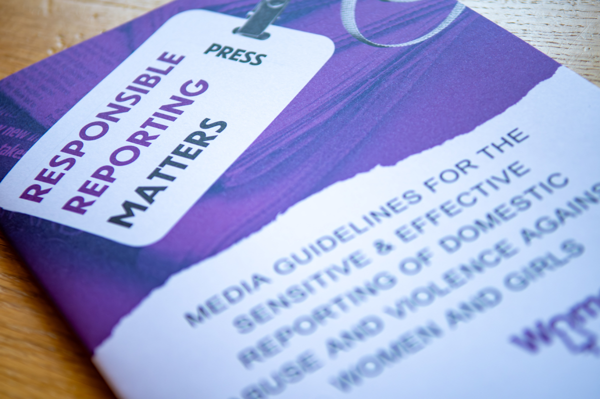
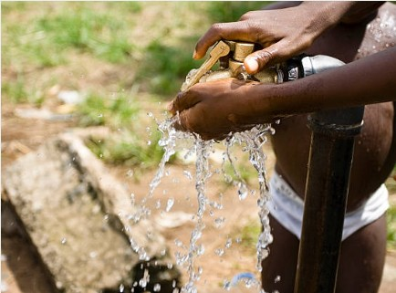

Job Market Paper
When Words Shape Action: Editorial Guidelines, Media Narratives and Audience Reactions Job Market Paper
Draft available upon request
Abstract
Media organizations increasingly adopt editorial standards to govern coverage of sensitive topics,
yet their effectiveness as policy instruments remains unexamined. This paper evaluates newsroom
guidelines designed to improve reporting on gender-based violence in France. Between 2018 and 2025,
I document the staggered adoption of editorial guidelines across 43 local newspapers, which
simultaneously discourage euphemistic terminology, mandate legally precise language, and often
require provision of emergency resources. Combining exhaustive femicide event records with
article-level text analysis and departmental helpline and petition data, I estimate effects on both
coverage patterns and audience behavior. Event-study estimates show that guideline adoption raises
the probability that an outlet covers a local femicide by 87% and increases the use of recommended
legal terminology by 132%, while producing no detectable reduction in the euphemistic,
passion-framed register the guidelines explicitly proscribe. These supply-side shifts move
audiences: departments more exposed to guideline-compliant coverage record more signatures on
petitions against gender-based violence and, suggestively, more calls to the national 3919 helpline.
The results indicate that guidelines operate by lowering the cost of reporting and signaling
editorial demand, rather than by deterring coverage, and that a low-cost editorial rule can reshape
not only the language of a crime report but the salience of gender-based violence as a public issue.
Presentations
Young Researchers Conference in Economics – HEC Liège;
Internal seminar – ENS de Lyon;
NICEP 2026 Conference – University of Nottingham;
Workshop on media, identity and norms – ENS de Lyon;
2nd PhD Workshop – Department of Economics – European University Institute;
Journées Doctorales du Développement – Job Market – Bordeaux School of Economics;
Economics Job Market Bootcamp in Tuscany

Publications
Groundwater, Climate Change and Conflict: Empirical Evidence from Africa
The World Bank Economic Review, 2026
Abstract
Groundwater plays a crucial role in supporting livelihoods and economic activities in Africa, particularly in regions affected by climate-induced water scarcity. This study explores the economic implications of groundwater resources during periods of climate shocks and their relationship to conflict dynamics in affected regions. It employs a comprehensive dataset covering the period from 1997 to 2021, encompassing information on conflict events and groundwater depth. The relationship between groundwater depth, climate shocks, and conflict occurrences is analyzed through both cross-sectional and temporal analyses across 10,310 cells (each 0.5×0.5◦, or ≈ 55×55 km). We define two measures of local climate shocks: a temporary shock based on yearly variation, and a persistent shock using a moving average of temperature over multiple years. The findings suggest that areas with a higher proportion of shallow water, i.e. more accessible groundwater, have become increasingly prone to violence over time, particularly in the presence of persistent local climate shocks. Moreover, these persistent shocks have a greater impact on low-intensity and localized conflict events in regions with more shallow groundwater. Further, within-cell inequalities in water access emerge as significant conflict drivers. Lastly, secondary analyses examining the respective contributions of pastoralist activities and state capacity to the observed effects provide insights into the mechanisms. Overall, the findings underscore the need for equitable water management strategies to mitigate conflict and promote sustainable development in Africa.
Presentations (by me)
ENS Lyon–UniBo Junior PhD Workshop – University of Bologna;
2023 1st Research Conference on the Economics of Sustainable Development (World Bank)

Working Papers
Dear Brothers and Sisters: Pope's Speeches and the Dynamics of Conflict in Africa
CEPR Discussion Paper No. 20108 (2025)
Abstract
Can influential leaders reduce conflict through public appeals for peace? We study the impact of the Catholic
Pope’s peace-seeking speeches on conflict in Africa. We construct a novel dataset of papal speeches addressing
violent conflicts between 1997 and 2022 and combine it with geocoded conflict data. We document
diffusion through national media and local Church networks, and effect on perceptions of religious authority.
Using event-study designs, we find that conflict incidence falls by 23% following a speech, alongside
reductions in conflict intensity and geographic dispersion. The response depends strongly on the nature
and source of the message and on the Pope’s perceived authority: neither non-conflict papal speeches nor
UN Security Council resolutions generate comparable declines in violence, while peace appeals are more
effective when the Pope commands broad moral authority and less effective when prior statements have
made that authority more contested. Effects are stronger where bishops have greater ecclesiastical experience,
and armed groups respond differently depending on religious affiliation and prior conflict history. The
effectiveness of peace messaging thus depends on both the messenger’s legitimacy and the local structures
through which messages are received.
Presentations (by me)
5th International Conference on Development Economics – ICDE – University Paris-Nanterre;
PhD Economics Virtual Seminar;
Facultad de Economía y Negocios (FEN) – Universidad de Chile;
Centre d'économie de la Sorbonne (CES);
Centre d'études et de recherches sur le développement international (CERDI)
Policy Papers
Beyond The Surface: Intersectionality of Gender and Underrepresentation in Water-Related Violence
Abstract
This paper investigates the nexus between water fetching, gender-based violence (GBV), and underrepresented population in Africa. By analyzing individual-level data from the Integrated Public Use Microdata Series-Demographic and Health Surveys (IPUMS-DHS), it is found that women responsible for water fetching experience increased risks of violence, particularly when traveling long distances to access water sources. In addition, the study explores the intersecting dynamics of gender and ethnicity, revealing that women from underrepresented groups face increased vulnerability to sexual violence, especially in regions with significant polarization. These findings underscore the multifaceted nature of water insecurity and its impacts on women's safety and well-being, emphasizing the importance of addressing gender and ethnic disparities in water access to mitigate violence against women.